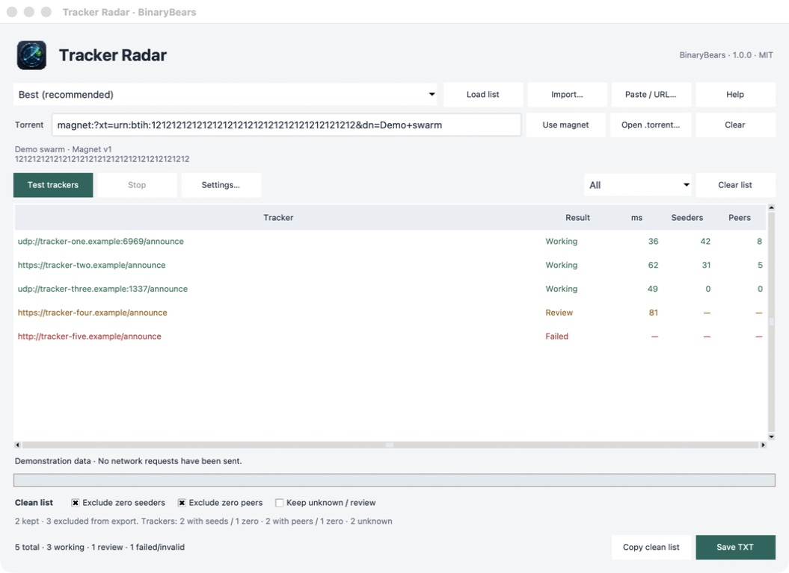

Bring your list
Import a TXT file, paste addresses, load a URL, or start with an ngosang preset. Duplicate entries are removed.
VERSION 1.0.0 / BY BINARYBEARS
Test your BitTorrent tracker list from your own connection. Inspect the replies, filter the results, and take a clean list back to your client.
Free & open source · MIT licensed · No account
A FOCUSED WORKFLOW
One desktop window. Load your trackers, run a check, then copy or save exactly the selection you want.
Import a TXT file, paste addresses, load a URL, or start with an ngosang preset. Duplicate entries are removed.
Check availability or add a magnet or torrent file to see seeders and incomplete peers for each tracker.
Exclude failed checks and, optionally, zero seeders or peers. Copy the clean list or save a TXT. Your input stays intact.
THE DESKTOP APP
A working tracker must return a valid BitTorrent protocol reply. An open port or a successful web request is not enough.

A valid protocol response.
Answered, but needs attention.
This check failed, or the URL is unsupported.
CLEAR BOUNDARIES
Tracker Radar queries trackers. It does not connect to discovered peers, join DHT, or download torrent content.
Missing statistics appear as a dash, never an invented zero. Review entries require an explicit choice before export.
Private torrent files are queried only against their embedded trackers. Use the original torrent file: magnets cannot reliably identify a private swarm.
No account, backend or telemetry. Trackers still see your IP address and any hash you query. Counts from different trackers are not unique swarm totals.
TRACKER RADAR 1.0.0
Python is included. Extract the complete archive and keep the app with its bundled files.
UNIVERSAL
macOS 11 or newer.
Apple Silicon and Intel.
Open Tracker Radar.app after extracting. See the release notes for signing status.
X64
Windows 10 or newer.
64-bit Intel or AMD.
Run Tracker Radar.exe. Unsigned; Windows SmartScreen may show a warning.
X64
glibc 2.36 or newer.
X11 or XWayland desktop.
Extract the TAR.GZ and run Tracker Radar. Built on Debian 12.
A FEW DETAILS
It helps identify trackers that respond from your connection. Download speed still depends on the swarm, your network and your client. More trackers do not guarantee more unique peers.
Incomplete peers reported by that tracker for the requested hash. Seeders have the complete content. The app keeps each tracker's counts separate.
No. A timeout can depend on your connection or the tracker at that moment. Retest before treating a failed response as a permanent outage.
Yes. Copy the clean list or import the saved TXT into your workflow. Tracker Radar does not modify your client. Private tracker URLs can contain passkeys; keep those exports private.